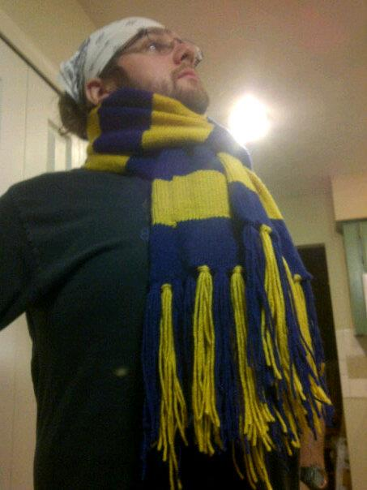

About Me
Tim here, I am
Hi, I'm Tim and this is my practice page.
In order to learn more about HTML, CSS, JavaScript, and other important tools of web design I am building this page from the scratch rather than using a template site. This site will be simple in nature and contain a few pages about me, my hobbies, and my adventures, but I hope it can be a bit entertaining, and I am sure it will be a great learning experience for me.
Tim here, I am
I've read that one of the most important things for meeting new folks and forging those oh so hard to find adult friendships, is to have hobbies. These are a few of mine.
I love cycling, and it is always a great opportunity to get out and explore! On a bike you have more time to enjoy your enviroment and take in the sights. From rolling through farmland and vineyards, to climbing peaks for sweeping views, to rolling down the costal highway, the view from the saddle is worth it.
In addition to great views and ejoying the journey as much as the destination, riding allows me to be more intune with my body. When I am pushing hard to get through a tough bit of road or set a new personal best time on a route, I feel very connected to the machine that is my body. When all you are focused on is your breath, your form, and the pounding of your muscles as you push for a goal, it's a very Zen place, and one I really love.
Out here, there's just pavement and pain, and the only way home is to get over both.
My Mom taught me to knit when I was in highschool so that I could make a christmas present for my then girlfriend, who is now my wife. So being crafty does pay off! Over the years I've enjoyed knitting as a great way to stay busy during the cold months, and especially while enjoying netflix, an audiobook or podcast, or an evening chill session with friends. I think it's a great simple craft to pick up and with sites like Ravelry there has never been a better time to look for cool patterns.
My other craft passion, is craft brewing. I learned to brew beer in college with firends. We started out just making simple kit brews which turned out well. I've since met some folks that are very interested in pushing boundries with IPAs, sours, lambecs, and I've even tried my hand at mead. As hobbies go, brewing and cooking are two where you are given ample time to hang out with people that share your passion both druing the work and as you enjoy the fruits of your labor.

In every walk with nature one receives far more than he seeks.
-John Muir
In 2018 I had the wonderful opportunity to spend a few days on the John Muir Trail hiking out of Yosmeite. This was my first experience doing any sort of back country backpacking and was a great learning experience with some stunning scenery.


This year, my wife and I completed the ALC 2019 ride which took 7 days and covered 545 miles from San Francisco to Los Angeles. The ride was an amazing experieince and one of the hardest and most rewarding things I have ever done.